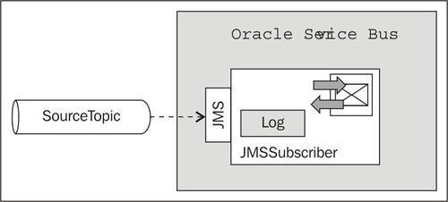
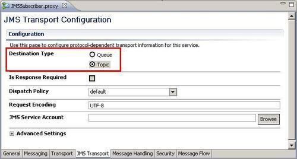
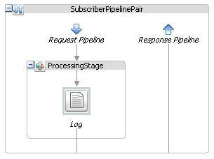
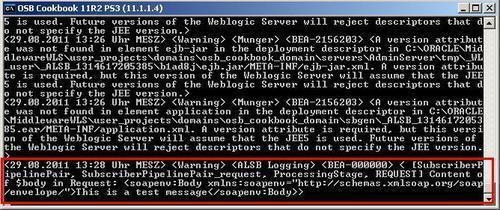
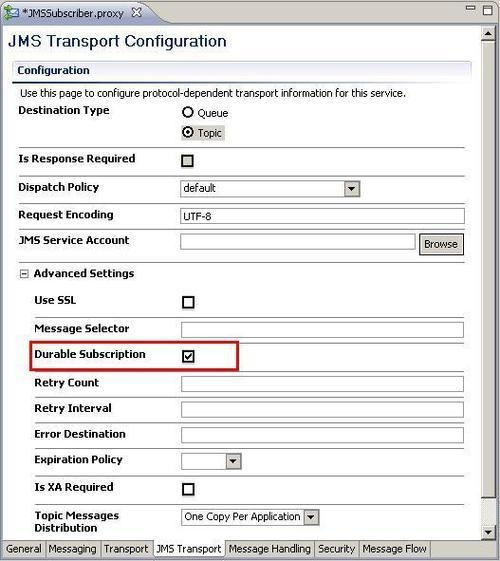
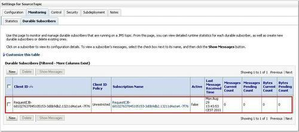

Subscribing to and consuming messages from a JMS topic is similar to consuming messages from a JMS queue. The main difference between a topic and a queue is that the topic can have multiple subscribers and that a subscription can either be durable or non-durable. With a durable topic, a message that cannot be delivered due to the subscriber being unavailable will be kept by the JMS server and delivered later when the subscriber is back online.
In this recipe, we will show you how to implement a proxy service as a subscriber for the topic. The proxy service will act as a listener on the JMS topic and will get active as soon as a message arrives in the topic. First we implement the non-durable subscription and show the durable subscription in the There's more... section later.

For this recipe, we need the JMS topic SourceTopic from the OSB Cookbook standard environment.
Let's implement the proxy service subscribing and accepting the messages from the topic.
In Eclipse OEPE, perform the following steps:
consuming-from-jms-topic and create a proxy folder within it. JMSSubscriber. jms://localhost:7001/weblogic.jms.XAConnectionFactory/jms.SourceTopic into the EndpointURI field.

$body for the<Expression>, Content of $body in Request into the Annotation field and select Warning as the value of the Severity drop-down listbox.Now we can test the subscription of the proxy service to the SourceTopic by putting a message into the topic.
Sending a message to a JMS topic is not supported by the WebLogic console. So we cannot use the same approach as shown in the previous recipe when consuming from a queue.
We can either use a business service to send a message to the topic (reusing the Sending a message to a topic recipe and reconfiguring it to use the SourceTopic, or use a tool such as JMS Browser or Hermes JMS for doing that. The recipe Sending a message to a queue/topic with JMS Browser recipe shows how to do that.
After putting a message into the JMS topic, check whether the following log statement shows up in the WebLogic console log window:

Now let's see what happens if the proxy service is not active, that is, it is in the disabled state. In the Service Bus console, perform the following steps to disable the JMSSubscriber proxy service:
Send a new message to the topic and check the Service Bus console log window.
There should be no new log message. Since the proxy service is no longer active, there is no longer an active subscription on the SourceTopic for the proxy service and therefore the message is not consumed from the topic.
Re-enable the proxy service by following the same steps (17-24) shown previously, but this time by selecting the Enabled checkbox. After activating the change session, the proxy service is back online and will again subscribe on the topic. Because the subscription was not durable, the topic does not keep the message and the message is lost. Check the OSB console where no new log message will be shown, indicating that the proxy service has not consumed any message after coming online again.
A message is lost if the proxy service is not active and the subscription is not durable.
The proxy service acts as a subscription to the JMS topic. That means any message published to the topic will be consumed by the proxy service and sent through the message flow configured on the proxy service. A subscription can either be durable or non-durable. A durable subscription will be active, even if the proxy service itself is disabled and therefore in an inactive state. So far in this recipe we have shown the behavior of a proxy service creating a non-durable subscription. In the next section, we will demonstrate how to make the subscription durable.
A topic can have multiple subscribers at the same time differentiated by a unique client ID specified when subscribing to the topic. If a proxy service is used to subscribe on a topic, then the client ID is generated by the OSB. It has a value similar to the following: RequestEJB-8542223846829071810-6ec035ed.13223f36c8d.-7fcf.
If a message is sent/published to a topic, then all of subscribers, will get the message if they are alive.
To make sure that the subscriber always gets a message published on a topic, even if he is unreachable or unavailable, the proxy service needs to create a durable subscription. In Eclipse OEPE, perform the following steps:

To view all durable subscribers registered on a topic, perform the following steps on the Service Bus console:

WebLogic JMS will keep track of which subscribers (again using the unique Client id) got a certain message delivered.
If we disable our proxy service now and send a message to the topic, the message will be kept by WebLogic JMS until the now durable subscriber receives it.